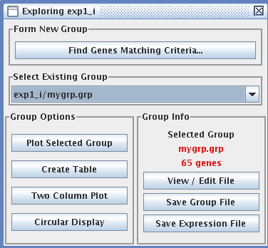

Explore (Control E)

After you have transformed your data, you can explore it in a number of ways. The default group of genes is the full set. You can select a subset of genes via the Form New Group button called "Find Genes Matching Criteria..." You can search for criteria similar to those shown for the filter set on the previous page. When you have identified genes of interest, the window changes as shown to the right in red text. To save this new group of genes, click on the "View/Edit File" button just below the red text, or click the "Save Group File" button just below that. You can also save any open group as a new expression file with only the genes in that group by clicking the "Save Expression File" button. After you save a new expression file, you’ll be asked if you want to explore the new file or keep the old one open. If you open the new one, you can use this for progressive query building – in the newly created expression file, form a new group by clicking the "Find Genes Matching Criteria..." button and you can query the new expression file.
|
A new window will appear that lets you view the list of genes in your newly formed group. You can modify this group if you want, or you can "save as" under the file menu. You can create many subgroups of genes and explore them individually using the "Select Existing Group" pull down menu. Once you have subsets of genes to explore, you can visualize them in a number of ways:
Plot Selected Group
You can have the ratios plotted graphically. You can select one gene using the pull down menu in the bottom right corner. Or, as shown here, you can click on one node at a time and hold down the shift key to select multiple genes (in this case, those with the lowest ratios in the group). These selected genes are listed in the top window (which you can pull down to see) as well as any other information about these genes in your gene list. You can adjust the size of the plot, as well as zoom in on a section. For example, this group of genes was selected by having a ratio of 2 or more at 150 minutes. To untangle the crowded lines, you can zoom in on any region of interest. To do this, hold down the control button then click and drag a box around the crowded area to zoom in. You can unzoom using the Plot View menu at the top of the window.
In addition, you can label the axes, save this as a file, print this plot, normalize the data (if you have not already done so), change the size and shape of the points, and search for certain terms for the genes based on the gene list from which these genes are derived.
Create Table
This feature is unique to MAGIC Tool and creates a dynamic table. The default is a grayscale table, but you can change this to a red-green scale if you prefer. The most interesting feature of this interactive table is the scale bar and the three sliding tabs. Imagine a gene set that has one gene with a very high ratio (e.g. +16) and one gene with a very low ratio
(-16) but with most genes having ratios between +3 and -3. Because of these two extreme genes, the color differences in the remaining genes would be lost. However, if you adjust the tabs, you can compress the color scale on the extreme ends and bring more color variation to the middle of the range of ratios, where most of your genes are located.You can also enter numerical values in the boxes corresponding to the values to change the colors. You can also choose to view the gene info associated with the genes in the group by choosing the Show Gene Info option from the Edit menu; choose the option again to turn off gene info.
In this view, the gene lines have been reduced from 16 pixels high to 3 pixels high, the color scale changed to grayscale and the range reduced to -1 to +1. This reduction makes all high and low values either white or black, but allows the intermediate values to be on the grayscale.
Two Column Plot
This plot allows you to
select two columns of data
and compare their ratios. As
you can see, some comparisons
are more similar than others.
In this plot, you can select a
single gene (left) or many
genes (right; hold down the
shift key while clicking). If you
mouse over a gene, the display
will tell you the two ratios for the two time points. You can also see an approximation in the bottom left corner.
Circular Display
Another unique MAGIC Tool display is the circular one. Let's imagine you have created a group of genes and you want to know how correlation coefficient for these genes, and to which genes the correlation exists. The default setting is correlation coefficient of 0.8 which is shown on the left. Using the display menu, you can change the radius of the circle and the threshold for reporting correlations. Change the threshold to 0.1 (correlation of 0.9) and you see fewer lines connecting the genes (right). In this case, the same gene was clicked on (yellow) and the genes which met the threshold are colored green with the lines colored red.